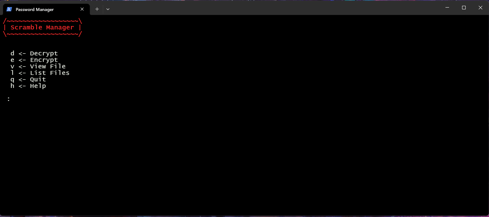
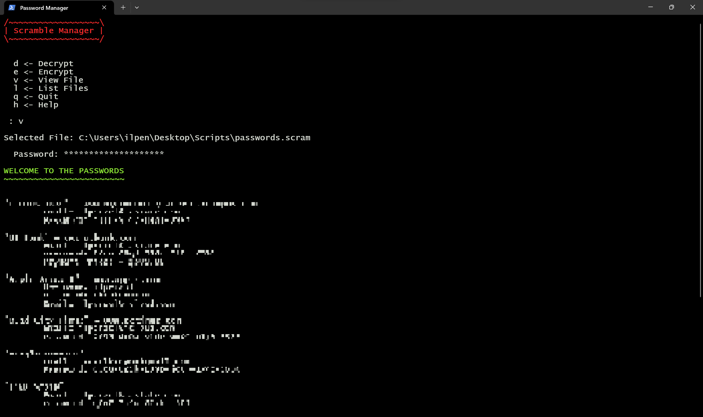

Scramble - Encryption
A java application that I spent time on building during the summer. I call it scramble becuase of course that is basically what it does; just in a reversable configuration. I became interested in encryption because I was trying to send one of my friends an installer program for a Virtual Instrument Technology(VST) to download. Yet Gmail did not like that, and it was of course flagged as harmful, rejecting the ability to send it. Faced with this problem, I just used a different file transfer service. But, later on I was interested in ways to send the file without being flagged. Poof. Encryption, hiding the contents of files and or transfer data by "scrambling" it all up, only able to read the contents with the correct key/password.
So in java I decided to mess around and came up with a working program that Gmail let me send a very weird looking "ascii text" file. By taking advantage of Java's ByteReader, this program is able to encrypt virtually any data. Now on the complexity and how easy the encryption is to crack, I personally have no idea at the moment. Later on I plan to disect the encryption and see the fastest ways to attempt to break in. For now I will start with pictures of the application.
Shortcut Command
C:\Windows\System32\WindowsPowerShell\v1.0\powershell.exe -noexit -ExecutionPolicy Bypass & C:\Users\ilpen\Desktop\Scripts\passwordmanager.ps1
The shortcut command opens up PowerShell, configures it to stay open, then executes a script. This was my first time writing a PowerShell script so I know lots of code is redundant, probably the worst way to do it, and I should have put as much into my Java code as possible. Though I learned a lot so that's a plus. The script basically does the UI instead of Java, which once again was not the best way to go about things. I was thinking on using PowerShell to make a complete GUI version though. The starting screen looks like this

You are met with a title screen that also displays all of the current commands that you can give it. Encrypt and Decrypt of course perform there corresponding functions, while view file lets you see contents of encrypted file in standard output. List files grabs all the .scram files you have saved and lists them. Quit of course quits and help re-prints the commands. Depending on the selection it might prompt the user to select a file for encryption/decryption, or to choose a file to view. After that selection, the userwill need to enter a password, and if decryption; an output file name.

The view command was used, a file was selected, and the correct password was put in. Though it looks like random junk because I have blurred and pixelated the image. Now this interface is just a very rough implementation of what this program could be used for. When creating the Java application I focused on using arguments so that it can be used in conjunction with other programs.
- e <- Encrypt file
- d <- Decrypt file
- i <- Input file with extension
- o <- Output file with extension
- p <- Password input
- a <- Append string onto file
- v <- View the file in standard output
- s <- Silent, no standard output
Examples:
java encrypt -d -p YourPasswordHere -i C:\Your\input\file\ -o C:\Your\output\file\ -s
java encrypt -e -p YourPasswordHere -i C:\Your\input\file\ -o C:\Your\output\file\ -s
java encrypt -d -p YourPasswordHere -i C:\Your\input\file\ -v -s
test